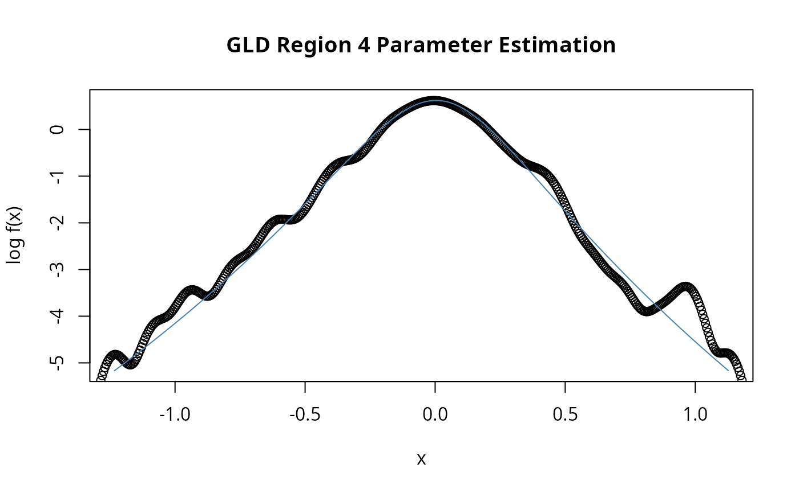

GH Distribution Fit
dist-gldFit.RdEstimates the distrinbutional parameters for a generalized lambda distribution.
Usage
gldFit(x, lambda1 = 0, lambda2 = -1, lambda3 = -1/8, lambda4 = -1/8,
method = c("mle", "mps", "gof", "hist", "rob"),
scale = NA, doplot = TRUE, add = FALSE, span = "auto", trace = TRUE,
title = NULL, description = NULL, ...)Arguments
- x
a numeric vector.
- lambda1, lambda2, lambda3, lambda4
are numeric values where
lambda1is the location parameter,lambda2is the location parameter,lambda3is the first shape parameter, andlambda4is the second shape parameter.- method
a character string, the estimation approach to fit the distributional parameters, see details.
- scale
not used.
- doplot
a logical flag. Should a plot be displayed?
- add
a logical flag. Should a new fit added to an existing plot?
- span
x-coordinates for the plot, by default 100 values automatically selected and ranging between the 0.001, and 0.999 quantiles. Alternatively, you can specify the range by an expression like
span=seq(min, max, times = n), where,minandmaxare the left and rigldt endpoints of the range, andngives the number of the intermediate points.- trace
a logical flag. Should the parameter estimation process be traced?
- title
a character string which allows for a project title.
- description
a character string which allows for a brief description.
- ...
parameters to be parsed.
Details
The function nlminb is used to minimize the objective
function. The following approaches have been implemented:
"mle", maximimum log likelihoo estimation.
"mps", maximum product spacing estimation.
"gof", goodness of fit approaches,
type="ad" Anderson-Darling,
type="cvm" Cramer-vonMise,
type="ks" Kolmogorov-Smirnov.
"hist", histogram binning approaches,
"fd" Freedman-Diaconis binning,
"scott", Scott histogram binning,
"sturges", Sturges histogram binning.
"rob", robust moment matching.
Value
an object from class "fDISTFIT".
Slot fit is a list, currently with components
estimate, minimum and code.
Examples
set.seed(1953)
s <- rgld(n = 1000, lambda1=0, lambda2=-1, lambda3=-1/8, lambda4=-1/8)
gldFit(s, lambda1=0, lambda2=-1, lambda3=-1/8, lambda4=-1/8,
doplot = TRUE, trace = FALSE)

#>
#> Title:
#> GLD Region 4 Parameter Estimation
#>
#> Call:
#> .gldFit.mle(x = x, lambda1 = lambda1, lambda2 = lambda2, lambda3 = lambda3,
#> lambda4 = lambda4, scale = scale, doplot = doplot, add = add,
#> span = span, trace = trace, title = title, description = description)
#>
#> Model:
#> GLD Region 4 Distribution
#>
#> Estimated Parameter(s):
#> lambda1 lambda2 lambda3 lambda4
#> 0.005003098 -0.848476173 -0.110743460 -0.101021255
#>